Chapter six
Originated by Aristotle, the concept of categorical propositions has constituted one of the core topics in logic for over 2,000 years. It remains important even today because many of the statements we make in ordinary discourse are either categorical propositions as they stand or are readily translatable into them. Standard form categorical propositions represent an ideal of clarity in language, and a familiarity with the relationships that prevail among them provides a backdrop of precision for all kinds of linguistic usage.
A categorical proposition is a statement that establishes a relationship between two classes or categories. The subject term represents one class, while the predicate term represents another class. The proposition asserts that either the entire subject class or a portion of it is either included in or excluded from the predicate class.
Given that a categorical proposition asserts the inclusion or exclusion of the subject class in relation to the predicate class, we can identify four distinct types of standard form of categorical propositions:
A categorical proposition that expresses these relations with complete clarity is called a standard-form categorical proposition. A categorical proposition is in standard form if and only if it is a substitution instance of one of the following four forms:
Many categorical propositions, of course, are not in standard form because, among other things, they do not begin with the words “all,” “no,” or “some.”
In the following categorical propositions identify the quantifier, subject term, copula, and predicate term.
Quality and quantity are attributes of categorical propositions. In order to see how these attributes pertain, it is useful to rephrase the meaning of categorical propositions in class terminology:
Proposition: All S are P.
Meaning in class notation: Every member of the S class is a member of the P class; that is, the S class is included in the P class.
Proposition: No S are P.
Meaning in class notation: No member of the S class is a member of the P class; that is, the S class is excluded from the P class.
Proposition: Some S are P.
Meaning in class notation: At least one member of the S class is a member of the P class.
Proposition: Some S are not P.
Meaning in class notation: At least one member of the S class is not a member of the P class.
Proposition: All S are P.
Letter name: A
Quantity: universal
Quality: affirmative
Proposition: No S are P.
Letter name: E
Quantity: universal
Quality: negative
Proposition: Some S are P.
Letter name: I
Quantity: particular
Quality: affirmative
Proposition: Some S are not P.
Letter name: O
Quantity: particular
Quality: negative
Another mnemonic that accomplishes the same purpose is "Any Student Earning B's Is Not On Probation." In this mnemonic the first letters may help one recall that A statements distribute the Subject, E statements distribute Both terms, I statements distribute Neither term, and O statements distribute the Predicate.
It can be summarized as follows:
Proposition (A): All S are P.
Terms distributed: S
Proposition (E): No S are P.
Terms distributed: S and P
Proposition (I): Some S are P.
Terms distributed: none
Proposition (O): Some S are not P.
Terms distributed: P
The main objective of our investigation into categorical propositions is to understand their role in constructing arguments. However, universal propositions (A and E) can be interpreted in two distinct ways, and depending on which an argument may be valid or invalid. Therefore, before analyzing arguments, we need to explore the two possible interpretations of universal propositions. Our exploration will primarily focus on a concept known as existential import.
To illustrate the concept of existential import, let's consider the following pair of propositions:
In everyday conversation, the first proposition implies that Tom Cruise has indeed made some movies. In other words, the statement carries existential import. It suggests that one or more movies associated with Tom Cruise actually exist. On the contrary, the second statement does not make such an implication. Although the statement can be considered true because unicorns, by definition, have a single horn, it does not imply the actual existence of unicorns.
The question arises as to how universal propositions should be interpreted in terms of implying the actual existence of the entities being discussed. Two different approaches have been taken by logicians in response to this question.
From an Aristotelian standpoint, it is held that universal propositions about existing entities do carry existential import. In other words, such propositions imply the existence of the entities being referred to. For example:
In this viewpoint, the first two statements have existential import because their subject terms denote entities that actually exist. However, the third statement has no existential import because satyrs do not exist.
From a Boolean standpoint:
The Aristotelian standpoint is receptive or open to existence. It acknowledges the existence of things, and universal statements about those things carry existential import. On the contrary, the Boolean standpoint is closed or unreceptive to existence. It does not recognize the existence of things, even when they do exist. Therefore, universal statements about those things do not carry existential import.
It is important to note that neither the Aristotelian nor the Boolean standpoint recognizes the existence of things that do not exist. In such cases, the Aristotelian standpoint aligns with the Boolean standpoint.
From the Boolean standpoint, the four kinds of categorical propositions have the following meaning. Notice that the first two (universal) propositions imply nothing about the existence of the things denoted by S:
Adopting this interpretation, the nineteenth-century logician John Venn developed a system of diagrams to represent the information they express. These diagrams have come to be known as Venn diagrams.
A Venn diagram is a visual representation that uses overlapping circles to depict the classes indicated by the terms in a categorical proposition. Since every categorical proposition consists of two terms, a Venn diagram for a single proposition comprises two circles that intersect. Each circle is labeled to represent one of the terms. By convention, the circle on the left represents the subject term (S), while the circle on the right represents the predicate term (P).
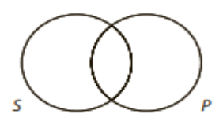
Individuals belonging to the class represented by each term are located within their respective circles. If there are individuals in the overlapping region, they belong to both the S class and the P class. Lastly, individuals outside both circles are not members of either class.
Venn diagrams use specific marks to represent information. Two types of marks are used: shading an area and placing an X in an area.
If no mark is present in an area, it indicates that no information is known about that region; it may contain members or it may be empty.
Shading is exclusively used to represent the content of universal (A and E) propositions, while placing an X in an area is exclusively used to represent the content of particular (I and O) propositions.
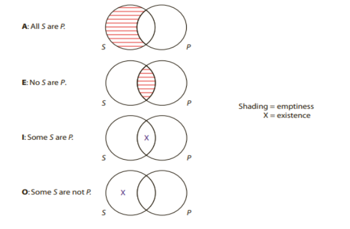
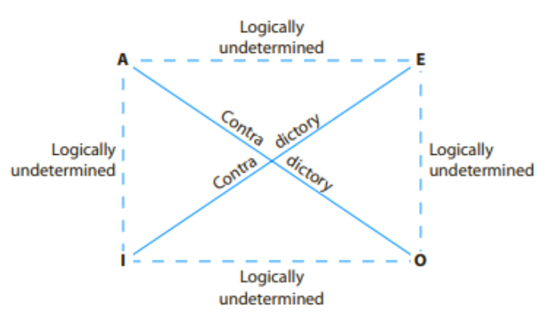
If two propositions are related by the contradictory relation, they necessarily have opposite truth value. Thus, if a certain A proposition is given as true, the corresponding O proposition must be false. Similarly, if a certain I proposition is given as false, the corresponding E proposition must be true.
But no other inferences are possible. In particular, given the truth value of an A or O proposition, nothing can be determined about the truth value of the corresponding E or I propositions. These propositions are said to have logically undetermined truth value. Similarly, given the truth value of an E or I proposition, nothing can be determined about the truth value of the corresponding A or O propositions.
Since the modern square of opposition provides logically necessary results, we can use it to test certain arguments for validity. We begin by assuming the premise is true, and we enter the pertinent truth value in the square. We then use the square to compute the truth value of the conclusion. If the square indicates that the conclusion is true, the argument is valid; if not, the argument is invalid.
Here is an example:
Some trade spies are not masters at bribery.
Therefore, it is false that all trade spies are masters at bribery.
Arguments of this sort are called immediate inferences because they have only one premise. Instead of reasoning from one premise to the next, we proceed immediately from the single premise to the conclusion.
To test the previous example for validity, we begin by assuming that the premise, which is an O proposition, is true. We then use the square to compute the truth value of the corresponding A proposition. By the contradictory relation, the A proposition is false. Since the conclusion claims that the A proposition is false, the conclusion is true, and therefore the argument is valid.
Arguments that are valid from the Boolean standpoint are said to be unconditionally valid because they are valid regardless of whether their terms refer to existing things.
From the Boolean standpoint, the existential fallacy is a formal fallacy that occurs whenever an argument is invalid merely because the premise lacks existential import. Such arguments always have a universal premise and a particular conclusion. The fallacy consists in attempting to derive a conclusion having existential import from a premise that lacks it.
Examples:
All A are B.
Therefore, some A are B.
No A are B.
Therefore, it is false that all A are B.
Note: while all of these forms proceed from a universal premise to a particular conclusion, it is important to see that not every inference having a universal premise and a particular conclusion commits the existential fallacy.
For example, the inference "All A are B; therefore, some A are not B" does not commit this fallacy. This inference is invalid because the conclusion contradicts the premise. Thus, to detect the existential fallacy, one must ensure that the invalidity results merely from the fact that the premise lacks existential import.
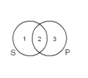
Conversion, obversion, and contraposition are operations that can be performed on a categorical proposition, resulting in a new statement that may or may not have the same meaning and truth value as the original statement. Venn diagrams are used to determine how the two statements relate to each other.
The simplest of the three operations is conversion, and it consists of switching the subject term with the predicate term. For example, if the statement "No foxes are hedgehogs" is converted, the resulting statement is "No hedgehogs are foxes." This new statement is called the converse of the given statement. To see how the four types of categorical propositions relate to their converse, compare the following sets of Venn diagrams:
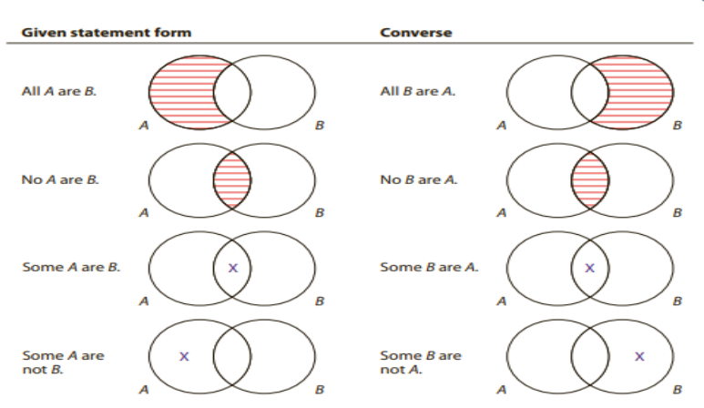
More complicated than conversion, obversion requires two steps: (1) changing the quality (without changing the quantity), and (2) replacing the predicate with its term complement. It consists in changing "No S are P" to "All S are non-P" and vice versa, and changing "Some S are P" to "Some S are not non-P" and vice versa.
The second step requires understanding the concept of class complement. The complement of a class is the group consisting of everything outside the class. For example, the complement of the class of dogs is the group that includes everything that is not a dog (cats, fish, trees, and so on). The term complement is the word or group of words that denotes the class complement. For terms consisting of a single word, the term complement is usually formed by simply attaching the prefix "non" to the term.
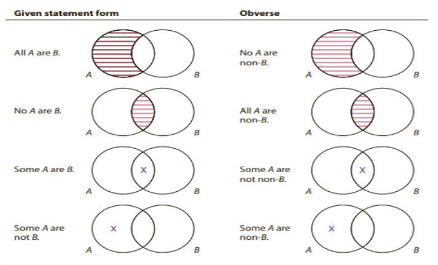
As is the case with conversion, obversion can be used to supply the link between the premise and the conclusion of immediate inferences. The following inference forms are valid:
All A are B
Therefore, no A are non-B.
No A are B
Therefore, all A are non-B.
Some A are B
Therefore, some A are not non-B.
Some A are not B.
Therefore, some A are non-B.
Like obversion, contraposition requires two steps: (1) switching the subject and predicate terms and (2) replacing the subject and predicate terms with their term complements. For example, if the statement “All goats are animals” is contraposed, the resulting statement is “All non-animals are nongoats.” This new statement is called the contrapositive of the given statement. To see how all four types of categorical propositions relate to their contrapositive, compare the following sets of diagrams:
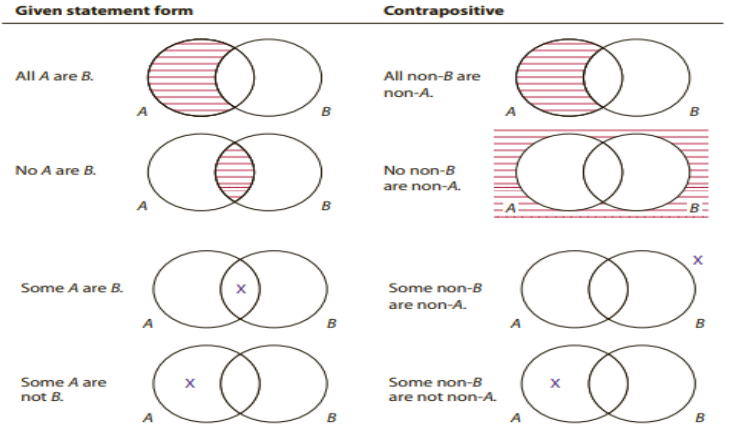
The question below provides a statement, its truth value in parentheses, and an operation. Determine the new statement and supply its truth value.
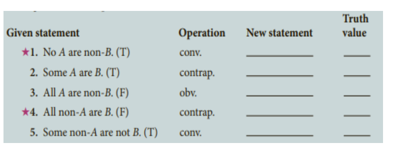
Up until now, we have been utilizing the Boolean standpoint. In this section, we will now adopt the Aristotelian standpoint, which acknowledges that universal propositions concerning existing entities carry existential implications. For such propositions, the traditional square of opposition becomes applicable. Similar to the modern square, the traditional square of opposition is a configuration of lines that demonstrates logically necessary relationships among the four types of categorical propositions. However, due to the Aristotelian standpoint's recognition of the additional factor of existential import, the traditional square enables more inferences than the modern square.
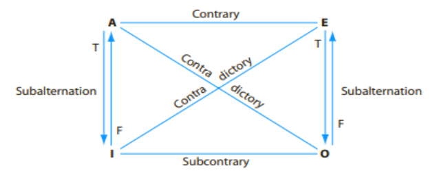
The four relations in the traditional square of opposition may be characterized as follows:
Next, let us see how we can use the traditional square of opposition to test immediate inferences for validity. Here is an example:
All Rolex watches are works of art. Therefore, it is false that no Rolex watches are works of art.
We begin by assuming the premise is true. Since the premise is an A proposition, by the contrary relation the corresponding E proposition is false. This is exactly what the conclusion says, so the argument is valid.
Here is another example:
Some viruses are structures that attack T cells. Therefore, some viruses are not structures that attack T cells.
Here the premise and conclusion are linked by the subcontrary relation. According to that relation, if the premise is assumed true, the conclusion has logically undetermined truth value, and so the inference is invalid. It commits the formal fallacy of illicit subcontrary.
The existential fallacy is committed from the Aristotelian standpoint when and only when contrary, subcontrary, and subalternation are used (in an otherwise correct way) to draw a conclusion from a premise about things that do not exist. All such inferences begin with a universal proposition, which has no existential import, and they conclude with a particular proposition, which has existential import. The existential fallacy is never committed in connection with the contradictory relation, nor is it committed in connection with conversion, obversion, or contraposition, all of which hold regardless of existence.
All witches who fly on broomsticks are fearless women. Therefore, some witches who fly on broomsticks are fearless women.
No wizards with magical powers are malevolent beings. Therefore, it is false that all wizards with magical powers are malevolent beings.
The first depends on an otherwise correct use of the subalternation relation, and the second on an otherwise correct use of the contrary relation. If flying witches and magical wizards actually existed, both arguments would be valid. But since they do not exist, both arguments are invalid and commit the existential fallacy.
Conditionally valid applies to an inference after the Aristotelian standpoint has been adopted and we are not certain if the subject term of the premise denotes actually existing things. For example, the following inference is conditionally valid:
All students who failed the exam are students on probation. Therefore, some students who failed the exam are students on probation.
The validity of this inference rests on whether there were in fact any students who failed the exam. The inference is either valid or invalid, but we lack sufficient information. Once it becomes known that there are indeed some students who failed the exam, we can assert that the inference is valid from the Aristotelian standpoint. But if there are no students who failed the exam, the inference is invalid because it commits the existential fallacy.
Use the traditional square of opposition to find the answers to these problems.
The difference between the Boolean standpoint and the Aristotelian standpoint concerns only universal (A and E) propositions. From the Boolean standpoint, universal propositions have no existential import, but from the Aristotelian standpoint they do have existential import when their subject terms refer to actually existing things.
Thus, if we are to construct a Venn diagram to represent such a statement from the Aristotelian standpoint, we need to use some symbol that represents this implication of existence.
The symbol that we will use for this purpose is an X surrounded by a circle. Like the uncircled X, this circled X signifies that something exists in the area in which it is placed. However, the uncircled X represents the positive claim of existence made by particular (I and O) propositions, whereas the circled X represents an implication of existence made by universal propositions about actually existing things.
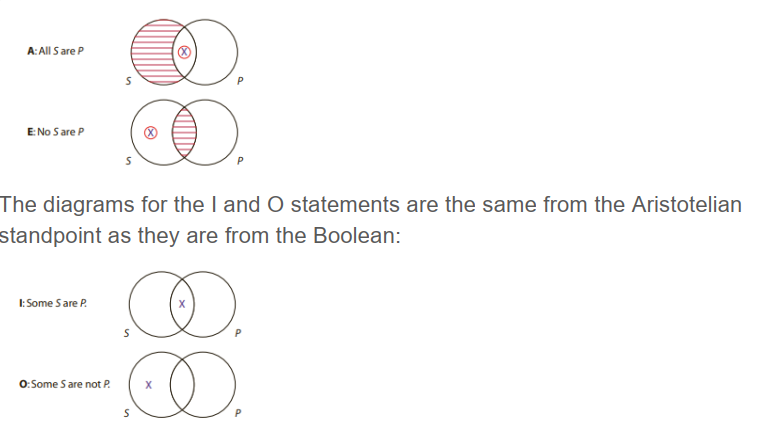
Since any inference that is valid from the Boolean standpoint is also valid from the Aristotelian standpoint, testing the inference from the Boolean standpoint is often simpler. If the inference is valid, then it is valid from both standpoints. But if the inference is invalid from the Boolean standpoint and has a particular conclusion, then it may be useful to test it from the Aristotelian standpoint.
Let us test the inference form: All A are B. Therefore, some A are B.
First, we draw Venn diagrams from the Boolean standpoint for the premise and conclusion:
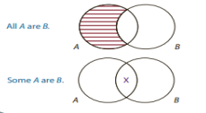
The information of the conclusion diagram is not represented in the premise diagram, so the inference form is not valid from the Boolean standpoint. Thus, noting that the conclusion is particular, we adopt the Aristotelian standpoint and assume that the subject (A) denotes at least one existing thing. This is represented by placing a circled X in the open area of that circle:
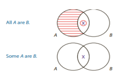
Now the information of the conclusion diagram is represented in the premise diagram. Thus, the inference form is conditionally valid from the Aristotelian standpoint. It is valid on condition that the circled X represents at least one existing thing.
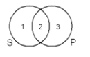
Use the modified Venn diagram technique to determine if the following immediate inference forms are valid from the Boolean standpoint, conditionally valid from the Aristotelian standpoint, or invalid.
When translating, it is vital to ensure that both the subject and predicate terms consist of either a plural noun or a pronoun. In cases where a term consists solely of an adjective, it is necessary to introduce a plural noun or pronoun.
Here are a couple of examples:
In this proposition, the predicate term "red" is an adjective. We introduce the plural noun "flowers" to properly represent the class of objects being referred to.
To emphasize that tigers belong to the class of carnivorous entities, we add the noun "animals" to the predicate term.
In standard form, the only allowed copulas are "are" and "are not." Statements with other verbs can be translated by explicitly stating the relationship between the subject and predicate.
To translate this, we can rephrase it as "Some college students are people who will become educated."
To express this in standard form, we can say "Some dogs are animals that would rather bark than bite."
A singular proposition makes an assertion about a particular person, place, or thing. When we translate singular propositions into universals, we often introduce a parameter.
Consider the statement "Socrates is mortal." To translate this into a universal proposition, we use the parameter "people identical to." The translation would be "All people identical to Socrates are people who are mortal." Since only Socrates is identical to Socrates, the phrase "people identical to Socrates" represents the class with only one member.
When a statement includes a spatial adverb (e.g., "wherever," "everywhere") or a temporal adverb (e.g., "always," "never"), it can be translated in terms of "places" or "times." Similarly, statements with pronouns (e.g., "whoever," "anything") can be translated in terms of "people" or "things."
In ordinary language, many statements contain implied quantifiers. One must rely on the most likely or probable meaning of the statement.
Emeralds are green gems. ----> All emeralds are green gems.
The implied quantifier is "all."
There are lions in the zoo. ----> Some lions are animals in the zoo.
The implied quantifier here is "some."
A tiger is a mammal. ----> All tigers are mammals.
The implied quantifier is "all."
A fish is not a mammal. ----> No fish are mammals.
The implied quantifier is "no."
The quantity of an assertion can be indicated by words other than "all," "some," and "no." These can include "few," "a few," "not every," and "anyone."
A few soldiers are heroes. ----> Some soldiers are heroes.
Anyone who votes is a citizen. ----> All voters are citizens.
Not everyone who votes is a Democrat. ----> Some voters are not Democrats.
Additionally, statements like "All S are not P" should be translated as either "No S are P" or "Some S are not P" depending on the intended meaning.
When a conditional statement has the antecedent and consequent referring to the same class, it can be translated into categorical form, always as a universal. The language following "if" is placed in the subject term.
If it's a mouse, then it's a mammal. ----> All mice are mammals.
Conditional statements with a negated consequent are typically translated as E propositions.
If it's a turkey, then it's not a mammal. ----> No turkeys are mammals.
The word "unless" is equivalent to "if not."
Tomatoes are edible unless they are spoiled. ----> All unspoiled tomatoes are edible tomatoes.
Propositions with words like "only," "none but," and "none except" are exclusive. The language following these words should be placed in the predicate term.
Only executives can use the silver elevator.
Correct Translation: "All people who can use the silver elevator are executives."
Statements that begin with "the only" are translated differently. The language following "the only" is placed in the subject term of the categorical proposition.
The only cars that are available are Chevrolets.
This is translated as "All cars that are available are Chevrolets."
Propositions in the form of "All except S are P" and "All but S are P" are classified as exceptive. These require pairs of conjoined categorical propositions to accurately represent their meaning.
It is important to note that many of the simple inferences and operations applicable to single categorical propositions cannot be applied to exceptive propositions.
Translate the following into standard form categorical propositions.